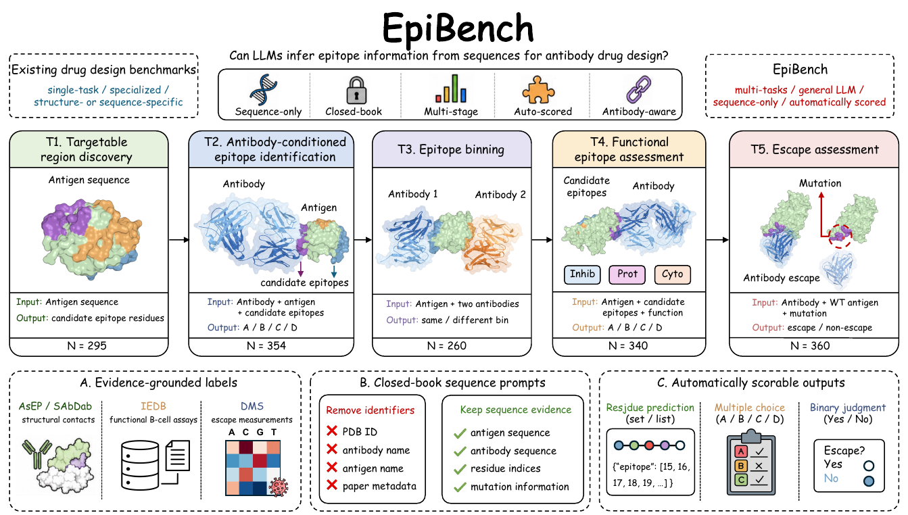
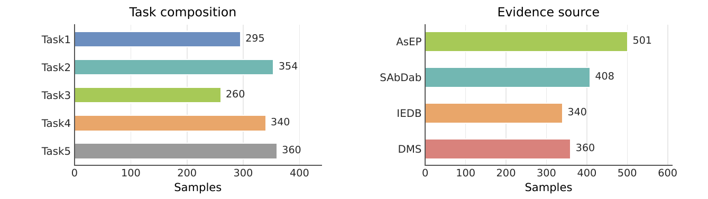
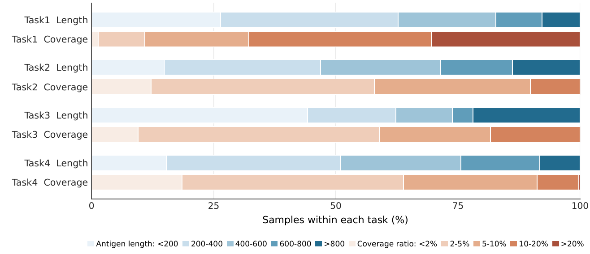

{kind=link}
{kind=link}
{kind=link}
Coarse localization is easier than precise discrimination.
Region recall improves, but residue-level AUROC stays close to random. Finding broadly relevant regions does not guarantee precise interface prediction.
Sequence-based · Closed-book · Antibody-aware
From finding a binding site to assessing escape: five connected decisions at the heart of antibody discovery.

01 / The question
An epitope is the region of an antigen recognized by an antibody. Where an antibody binds can shape its therapeutic function, specificity, and vulnerability to escape.
EpiBench evaluates whether general-purpose language models can use antigen and antibody sequences to reason about these decisions. Its five tasks connect binding-site discovery, antibody-conditioned identification, epitope binning, functional assessment, and mutation-specific escape.
The benchmark brings together structural contacts, functional assays, and deep mutational scanning measurements in a closed-book, automatically scorable evaluation. Across nine LLMs, the paper finds partial epitope-related competence, with persistent limitations in antibody-specific grounding and residue-level localization.
02 / The benchmark
Each task isolates a different epitope-centered decision. Prompts retain sequence information while removing identifiers such as antigen names and PDB IDs.
Given an antigen sequence alone, identify residues that belong to experimentally observed antibody-binding regions.
Select the candidate epitope recognized by a particular antibody, using both sides of the interaction.
Determine whether two antibodies bind overlapping epitopes. Sampling matches antibody similarity profiles where possible to reduce similarity-only shortcuts.
same_bin or different_binChoose the candidate epitope supported by functional antibody evidence, including inhibition, protection, or cytotoxicity.
Predict whether an antigen point mutation disrupts recognition by a specific antibody, with labels grounded in deep mutational scanning.
escape or non_escape03 / The evidence
EpiBench combines AsEP and SAbDab structural evidence, IEDB functional assays, and DMS escape measurements. All five task configurations provide a test split.


04 / The findings
The paper evaluates nine general-purpose LLMs under a unified zero-shot protocol that permits explicit intermediate reasoning. Performance varies substantially by task.
| Model | T1RegR@50 | T1AUROC | T2Accuracy | T3Accuracy | T4Accuracy | T5Accuracy |
|---|---|---|---|---|---|---|
| Reasoning models | ||||||
| Gemini-3-Flash | 56.9 | 54.6 | 28.2 | 53.5 | 35.6 | 46.2 |
| GPT-5.5 | 49.7 | 52.3 | 31.9 | 67.3 | 33.2 | 52.2 |
| Qwen3.7-Plus | 47.8 | 52.0 | 24.0 | 58.9 | 25.0 | 48.6 |
| GLM-5.2 | 45.0 | 51.4 | 24.3 | 56.9 | 24.1 | 50.0 |
| DeepSeek-V4-Pro | 31.8 | 51.3 | 30.8 | 55.0 | 30.3 | 48.3 |
| Kimi-K2.6 | 36.7 | 51.1 | 25.4 | 51.9 | 27.1 | 41.4 |
| Nonreasoning models | ||||||
| GPT-4o | 38.5 | 50.5 | 25.4 | 51.2 | 23.8 | 52.2 |
| Grok 4.20 | 40.8 | 50.9 | 33.6 | 65.8 | 30.0 | 54.7 |
| Qwen3-235B | 40.5 | 50.3 | 29.4 | 49.2 | 24.4 | 46.7 |
| Reference baselines | ||||||
| Random baseline | — | 50.0 | 25.0 | 50.0 | 25.0 | 50.0 |
| Specialized model | 60.4 | 58.0 | 40.2 | 70.8 | — | — |
Bold marks the best LLM result in each column. Specialized references use BepiPred-3.0 for T1 and EpiPred-derived baselines for T2–T3. A dash means not applicable or no directly matched reference. T3 follows the paper's accuracy reporting; the dataset card specifies balanced accuracy.
Region recall improves, but residue-level AUROC stays close to random. Finding broadly relevant regions does not guarantee precise interface prediction.
Gemini-3-Flash leads region discovery and functional assessment, GPT-5.5 leads binning, and Grok 4.20 leads identification and escape assessment.
Binding and escape decisions require connecting a particular antibody to individual antigen residues, beyond recognizing generic sequence properties.
05 / Use EpiBench
Load a task directly from Hugging Face with the Python datasets library. Each record includes task-specific inputs, a gold label, and metadata.
from datasets import load_dataset
ds = load_dataset("oteam/EpiBench", "task2", split="test")
sample = ds[0]
print(sample["input"])
print(sample["label"])Use only the task inputs in evaluation prompts; keep gold labels separate for scoring. The repository contains JSONL data, prompt templates, and rendering code.
Explore the dataset Read the documentation06 / Reference
If EpiBench supports your research, please cite our paper.
@misc{wang2026epibench,
title={EpiBench: Can LLMs Understand Epitopes for Antibody Drug Discovery?},
author={Zirui Wang and Jiaqi Wang and Qinghan Wang and Yuzhi Xu
and Gang Du and Tingjun Hou and Odin Zhang},
year={2026},
eprint={2608.06022},
archivePrefix={arXiv},
primaryClass={cs.CL},
url={https://arxiv.org/abs/2608.06022}
}